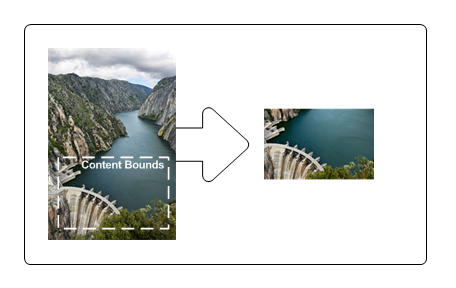
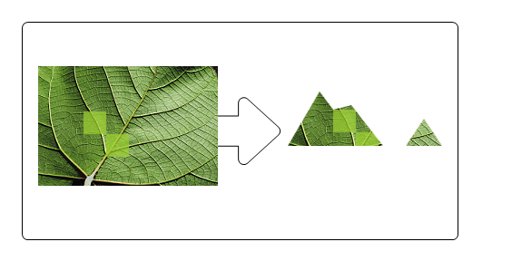
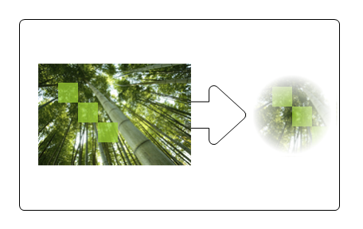

title: Layers Overview description: Describes the basics of Direct2D layers. ms.assetid: 22d161fb-8470-49cc-a523-309f90643ea9 keywords:
This overview describes the basics of using Direct2D layers. It contains the following sections.
Layers, represented by ID2D1Layer objects, enable an application to manipulate a group of drawing operations. You use a layer by "pushing" it onto a render target. Subsequent drawing operations by the render target are directed to the layer. After you're finished with the layer, you "pop" the layer from the render target, which composites the layer's content back to the render target.
Like brushes, layers are device-dependent resources created by render targets. Layers can be used on any render target in the same resource domain that contains the render target that created it. However, a layer resource can only be used by one render target at a time. For more information about resources, see the Resources Overview.
Although layers offer a powerful rendering technique for producing interesting effects, excessive number of layers in an application can adversely affect its performance, because of the various costs associated with managing layers and layer resources. For example, there is the cost of filling or clearing the layer and then blending it back, especially on higher-end hardware. Then, there is the cost of managing the layer resources. If you reallocate these frequently, the resulting stalls against the GPU will be the most significant problem. When you design your application, try to maximize reusing layer resources.
Windows 8 introduced new layer related APIs that simplify, improve the performance of, and add features to layers.
The ID2D1DeviceContext interface is derived from the ID2D1RenderTarget interface and is key to displaying Direct2D content in Windows 8, for more information about this interface see Devices and Device Contexts. With the device context interface, you can skip calling the CreateLayer method and then pass NULL to the ID2D1DeviceContext::PushLayer method. Direct2D automatically manages the layer resource and can share resources between layers and effect graphs.
The D2D1_LAYER_PARAMETERS1 structure is the same as D2D1_LAYER_PARAMETERS, except the final member of the structure is now a D2D1_LAYER_OPTIONS1 enumeration.
D2D1_LAYER_OPTIONS1 has no ClearType option and has two different options that you can use to improve performance:
D2D1_LAYER_OPTIONS1_INITIALIZE_FROM_BACKGROUND: Direct2D renders primitives to the layer without clearing it with transparent black. This is not the default, but in most cases results in better performance.
D2D1_LAYER_OPTIONS1_IGNORE_ALPHA: if the underlying surface is set to D2D1_ALPHA_MODE_IGNORE, this option lets Direct2D avoid modifying the alpha channel of the layer. Do not use this in other cases.
Starting in Windows 8, the device context has a primitive blend mode that determines how each primitive is blended with the target surface. This mode also applies to layers when you call the PushLayer method.
For example, if you are using a layer to clip primitives with transparency set the D2D1_PRIMITIVE_BLEND_COPY mode on the device context for proper results. The copy mode makes the device context linear interpolate all 4 color channels, including the alpha channel, of each pixel with the contents of the target surface according to the geometric mask of the layer.
Starting in Windows 8, Direct2D supports interoperation with Direct3D and GDI while a layer or clip is pushed. You call ID2D1GdiInteropRenderTarget::GetDC while a layer is pushed to interoperate with GDI. You call ID2D1DeviceContext::Flush and then render to the underlying surface to interoperate with Direct3D. It is your responsibility to render inside the layer or clip with Direct3D or GDI. If you try to render outside the layer or clip the results are undefined.
Working with layers requires familiarity with the CreateLayer, PushLayer, and PopLayer methods, and the D2D1_LAYER_PARAMETERS structure, which contains a set of parametric data that defines how the layer can be used. The following list describes the methods and structure.
Call the CreateLayer method to create a layer resource.
[!Note]
Starting in Windows 8, you can skip calling the CreateLayer method and then pass NULL to the PushLayer method on the ID2D1DeviceContext interface. This is simpler and allows Direct2D to automatically manage the layer resource and share resources between layers and effect graphs.
Â
After render target has begun drawing (after its BeginDraw method has been called), you can use the PushLayer method. The PushLayer method adds the specified layer to the render target, so that the target receives all subsequent drawing operations until PopLayer is called. This method takes an ID2D1Layer object returned by calling CreateLayer and an layerParameters in the D2D1_LAYER_PARAMETERS structure. The following table describes the fields of the structure.
| Field | Description |
|---|---|
| contentBounds | The content bounds of the layer. Content won't render outside these bounds. This parameter defaults to InfiniteRect. When the default value is used, the content bounds are effectively taken to be the bounds of the render target. |
| geometricMask | (Optional) The area, defined by an ID2D1Geometry, to which the layer should be clipped. Set to NULL if the layer shouldn't be clipped to a geometry. |
| maskAntialiasMode | A value that specifies the antialiasing mode for the geometric mask specified by the geometricMask field. |
| maskTransform | A value that specifies the transform that is applied to the geometric mask when composing the layer. This is relative to the world transform. |
| opacity | The opacity value of the layer. The opacity of each resource in the layer is multiplied with this value when compositing to the target. |
| opacityBrush | (Optional) A brush that is used to modify the opacity of the layer. The brush is mapped to the layer, and the alpha channel of each mapped brush pixel is multiplied against the corresponding layer pixel. Set to NULL if the layer shouldn't have an opacity mask. |
| layerOptions | A value that specifies whether the layer intends to render text with ClearType antialiasing. This parameter defaults to off. Turning it on enables ClearType to work correctly, but it results in slightly slower rendering speed. |
Â
[!Note]
Starting in Windows 8, you cannot render with ClearType in a layer, so the layerOptions parameter should always be set to D2D1_LAYER_OPTIONS_NONE
Â
For convenience, Direct2D provides the D2D1::LayerParameters method to help you create D2D1_LAYER_PARAMETERS structures.
To composite the contents of the layer into the render target, call the PopLayer method. You must call the PopLayer method before you call the EndDraw method.
The following example shows how to use CreateLayer, PushLayer, and PopLayer. All fields in the D2D1_LAYER_PARAMETERS structure are set to their defaults, except opacityBrush, which is set to an ID2D1RadialGradientBrush.
// Create a layer.
ID2D1Layer *pLayer = NULL;
hr = pRT->CreateLayer(NULL, &pLayer);
if (SUCCEEDED(hr))
{
pRT->SetTransform(D2D1::Matrix3x2F::Translation(300, 250));
// Push the layer with the content bounds.
pRT->PushLayer(
D2D1::LayerParameters(
D2D1::InfiniteRect(),
NULL,
D2D1_ANTIALIAS_MODE_PER_PRIMITIVE,
D2D1::IdentityMatrix(),
1.0,
m_pRadialGradientBrush,
D2D1_LAYER_OPTIONS_NONE),
pLayer
);
pRT->DrawBitmap(m_pBambooBitmap, D2D1::RectF(0, 0, 190, 127));
pRT->FillRectangle(
D2D1::RectF(25.f, 25.f, 50.f, 50.f),
m_pSolidColorBrush
);
pRT->FillRectangle(
D2D1::RectF(50.f, 50.f, 75.f, 75.f),
m_pSolidColorBrush
);
pRT->FillRectangle(
D2D1::RectF(75.f, 75.f, 100.f, 100.f),
m_pSolidColorBrush
);
pRT->PopLayer();
}
SafeRelease(&pLayer);
Code has been omitted from this example.
Note that when you call PushLayer and PopLayer, ensure that each PushLayer has a matching PopLayer call. If there are more PopLayer calls than PushLayer calls, the render target is placed into an error state. If Flush is called before all outstanding layers are popped, the render target is placed into an error state and returns an error. To clear the error state, use EndDraw.
The contentBounds sets the limit of what is to be drawn to the layer. Only those things within the content bounds are composited back to the render target.
The example that follows shows how to specify contentBounds so that the original image is clipped to the content bounds with the upper-left corner at (10, 108) and the lower-right corner at (121, 177). The following illustration shows the original image and the result of clipping the image to the content bounds.

HRESULT DemoApp::RenderWithLayerWithContentBounds(ID2D1RenderTarget *pRT)
{
HRESULT hr = S_OK;
// Create a layer.
ID2D1Layer *pLayer = NULL;
hr = pRT->CreateLayer(NULL, &pLayer);
if (SUCCEEDED(hr))
{
pRT->SetTransform(D2D1::Matrix3x2F::Translation(300, 0));
// Push the layer with the content bounds.
pRT->PushLayer(
D2D1::LayerParameters(D2D1::RectF(10, 108, 121, 177)),
pLayer
);
pRT->DrawBitmap(m_pWaterBitmap, D2D1::RectF(0, 0, 128, 192));
pRT->PopLayer();
}
SafeRelease(&pLayer);
return hr;
}
Code has been omitted from this example.
[!Note]
The resulting clipped image is further affected if you specify a geometricMask. See the Geometric Masks section for more information.
Â
A geometric mask is a clip or a cutout, defined by an ID2D1Geometry object, that masks a layer when it is drawn by a render target. You can use the geometricMask field of the D2D1_LAYER_PARAMETERS structure to mask the results to a geometry. For example, if you want to display an image masked by a block letter "A", you can first create a geometry representing the block letter "A" and use that geometry as a geometric mask for a layer. Then, after pushing the layer, you can draw the image. Popping the layer results in the image being clipped to the block letter "A" shape.
The example that follows shows how to create an ID2D1PathGeometry containing a shape of a mountain and then pass the path geometry to the PushLayer. It then draws a bitmap and squares. If there is only a bitmap in the layer to render, use FillGeometry with a clamped bitmap brush for efficiency. The following illustration shows the output from the example.

The first example defines the geometry to be used as a mask.
hr = m_pD2DFactory->CreatePathGeometry(&m_pPathGeometry);
if(SUCCEEDED(hr))
{
ID2D1GeometrySink *pSink = NULL;
// Write to the path geometry using the geometry sink.
hr = m_pPathGeometry->Open(&pSink);
if (SUCCEEDED(hr))
{
pSink->SetFillMode(D2D1_FILL_MODE_WINDING);
pSink->BeginFigure(
D2D1::Point2F(0, 90),
D2D1_FIGURE_BEGIN_FILLED
);
D2D1_POINT_2F points[7] = {
D2D1::Point2F(35, 30),
D2D1::Point2F(50, 50),
D2D1::Point2F(70, 45),
D2D1::Point2F(105, 90),
D2D1::Point2F(130, 90),
D2D1::Point2F(150, 60),
D2D1::Point2F(170, 90)
};
pSink->AddLines(points, 7);
pSink->EndFigure(D2D1_FIGURE_END_CLOSED);
hr = pSink->Close();
}
SafeRelease(&pSink);
}
The next example uses the geometry as a mask for the layer.
HRESULT DemoApp::RenderWithLayerWithGeometricMask(ID2D1RenderTarget *pRT)
{
HRESULT hr;
// Create a layer.
ID2D1Layer *pLayer = NULL;
hr = pRT->CreateLayer(NULL, &pLayer);
if (SUCCEEDED(hr))
{
pRT->SetTransform(D2D1::Matrix3x2F::Translation(300, 450));
pRT->PushLayer(
D2D1::LayerParameters(D2D1::InfiniteRect(), m_pPathGeometry),
pLayer
);
pRT->DrawBitmap(m_pLeafBitmap, D2D1::RectF(0, 0, 198, 132));
pRT->FillRectangle(
D2D1::RectF(50.f, 50.f, 75.f, 75.f),
m_pSolidColorBrush
);
pRT->FillRectangle(
D2D1::RectF(75.f, 75.f, 100.f, 100.f),
m_pSolidColorBrush
);
pRT->PopLayer();
}
SafeRelease(&pLayer);
return hr;
}
Code has been omitted from this example.
[!Note]
In general, if you specify a geometricMask, you can use the default value, InfiniteRect, for the contentBounds.
If contentBounds is NULL, and geometricMask is non-NULL, then the content bounds are effectively the bounds of the geometric mask after the mask transform is applied.
If contentBounds is non-NULL, and geometricMask is non-NULL, then the transformed geometric mask is effectively clipped against content bounds and the content bounds are assumed to be infinite.
Â
An opacity mask is a mask, described by a brush or bitmap, that is applied to another object to make that object partially or completely transparent. It allows the use of the alpha channel of a brush to be used as a content mask. For example, you can define a radial gradient brush that varies from opaque to transparent to create a vignette effect.
The example that follows uses an ID2D1RadialGradientBrush (m_pRadialGradientBrush) as an opacity mask. It then draws a bitmap and squares. If there is only a bitmap in the layer to render, use FillGeometry with a clamped bitmap brush for efficiency. The following illustration shows the output from this example.

HRESULT DemoApp::RenderWithLayerWithOpacityMask(ID2D1RenderTarget *pRT)
{
HRESULT hr = S_OK;
// Create a layer.
ID2D1Layer *pLayer = NULL;
hr = pRT->CreateLayer(NULL, &pLayer);
if (SUCCEEDED(hr))
{
pRT->SetTransform(D2D1::Matrix3x2F::Translation(300, 250));
// Push the layer with the content bounds.
pRT->PushLayer(
D2D1::LayerParameters(
D2D1::InfiniteRect(),
NULL,
D2D1_ANTIALIAS_MODE_PER_PRIMITIVE,
D2D1::IdentityMatrix(),
1.0,
m_pRadialGradientBrush,
D2D1_LAYER_OPTIONS_NONE),
pLayer
);
pRT->DrawBitmap(m_pBambooBitmap, D2D1::RectF(0, 0, 190, 127));
pRT->FillRectangle(
D2D1::RectF(25.f, 25.f, 50.f, 50.f),
m_pSolidColorBrush
);
pRT->FillRectangle(
D2D1::RectF(50.f, 50.f, 75.f, 75.f),
m_pSolidColorBrush
);
pRT->FillRectangle(
D2D1::RectF(75.f, 75.f, 100.f, 100.f),
m_pSolidColorBrush
);
pRT->PopLayer();
}
SafeRelease(&pLayer);
return hr;
}
Code has been omitted from this example.
[!Note]
This example uses a layer to apply an opacity mask to a single object to keep the example as simple as possible. When applying an opacity mask to a single object, its more efficient to use the FillOpacityMask or FillGeometry methods, rather than a layer.
Â
For instructions on how to apply an opacity mask without using a layer, see the Opacity Masks Overview.
As mentioned earlier, excessive number of layers can adversely affect the performance of your application. To improve performance, avoid using layers whenever possible; instead use their alternatives. The following code example shows how to use PushAxisAlignedClip and PopAxisAlignedClip to clip a region, as an alternative to using a layer with content bounds.
pRT->PushAxisAlignedClip(
D2D1::RectF(20, 20, 100, 100),
D2D1_ANTIALIAS_MODE_PER_PRIMITIVE
);
pRT->FillRectangle(D2D1::RectF(0, 0, 200, 133), m_pOriginalBitmapBrush);
pRT->PopAxisAlignedClip();
Similarly, use FillGeometry with a clamped bitmap brush as an alternative to using a layer with an opacity mask when there is only one content in the layer to render, as shown in the following example.
m_pRenderTarget->FillGeometry(
m_pRectGeo,
m_pLinearFadeFlowersBitmapBrush,
m_pLinearGradientBrush
);
As an alternative to using a layer with a geometric mask, consider using a bitmap mask to clip a region, as shown in the following example.
// D2D1_ANTIALIAS_MODE_ALIASED must be set for FillOpacityMask
// to function properly.
m_pRenderTarget->SetAntialiasMode(D2D1_ANTIALIAS_MODE_ALIASED);
m_pRenderTarget->FillOpacityMask(
m_pBitmapMask,
m_pOriginalBitmapBrush,
D2D1_OPACITY_MASK_CONTENT_GRAPHICS,
&rcBrushRect,
NULL
);
m_pRenderTarget->SetAntialiasMode(D2D1_ANTIALIAS_MODE_PER_PRIMITIVE);
Lastly, if you want to apply opacity to a single primitive, you should multiply the opacity into the into the brush color and then render the primitive. You do not need a layer or an opacity mask bitmap.
float opacity = 0.9f;
ID2D1SolidColorBrush *pBrush = NULL;
hr = pCompatibleRenderTarget->CreateSolidColorBrush(
D2D1::ColorF(D2D1::ColorF(0.93f, 0.94f, 0.96f, 1.0f * opacity)),
&pBrush
);
m_pRenderTarget->FillRectangle(
D2D1::RectF(50.0f, 50.0f, 75.0f, 75.0f),
pBrush
);
The figure here shows the result of applying a clip to an image.
You can get this result by using layers with a geometry mask or the FillGeometry method with an opacity brush.
Here's an example that uses a layer:
// Call PushLayer() and pass in the clipping geometry.
m_d2dContext->PushLayer(
D2D1::LayerParameters(
boundsRect,
geometricMask));
Here's an example that uses the FillGeometry method:
// Create an opacity bitmap and render content.
m_d2dContext->CreateBitmap(size, nullptr, 0,
D2D1::BitmapProperties(
D2D1_BITMAP_OPTIONS_TARGET,
D2D1::PixelFormat(
DXGI_FORMAT_A8_UNORM,
D2D1_ALPHA_MODE_PREMULTIPLIED),
dpiX, dpiY),
&opacityBitmap);
m_d2dContext->SetTarget(opacityBitmap.Get());
m_d2dContext->BeginDraw();
…
m_d2dContext->EndDraw();
// Create an opacity brush from the opacity bitmap.
m_d2dContext->CreateBitmapBrush(opacityBitmap.Get(),
D2D1::BitmapBrushProperties(),
D2D1::BrushProperties(),
&bitmapBrush);
// Call the FillGeometry method and pass in the clip geometry and the opacity brush
m_d2dContext->FillGeometry(
clipGeometry.Get(),
brush.Get(),
opacityBrush.Get());
In this code example, when you call the PushLayer method, you don't pass in an app created layer. Direct2D creates a layer for you. Direct2D is able to manage the allocation and destruction of this resource without any involvement from the app. This allows Direct2D to reuse layers internally and apply resource management optimizations.
[!Note]
In Windows 8 many optimizations have been made to the usage of layers and we recommend you try using layer APIs instead of FillGeometry whenever possible.
Â
If the region to be clipped is aligned to the axis of the drawing surface, instead of arbitrary. This case is suited for using a clip rectangle instead of a layer. The performance gain is more for aliased geometry than antialiased geometry. For more info on axis aligned clips, see the PushAxisAlignedClip topic.
Â
Â